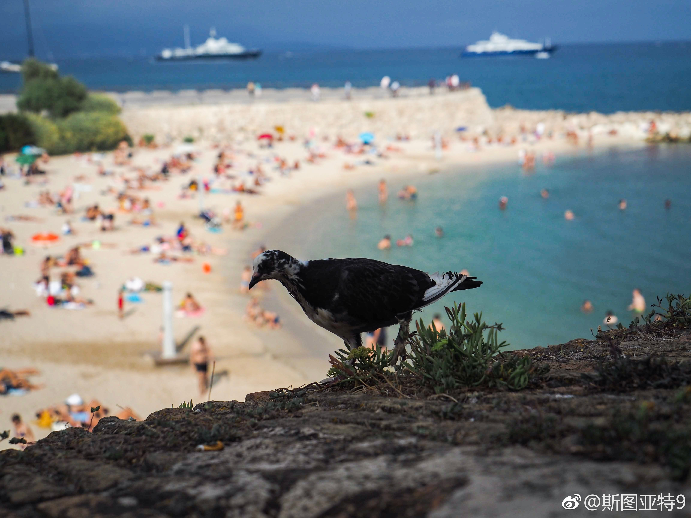

法国东南部的海岸叫做蓝色海岸或者蔚蓝海岸。查了一下维基百科，这个地区在法语里叫Côte d'Azur，直译为蓝色的省（法国的行政区划）。这个“Azur”和英语的Azure是同根的，在这里即蓝色的意思。中文翻译大概来自于奥克语管这个地区的说法Còsta d'Azur。查了一下，奥克语是法国南部以及意大利、西班牙一小部分地区的语言。在20世纪初依然是法国南部农村的日常语言，但现在说奥克语的人只有10万左右。英文管这个地区叫做French Riviera。Riviera是一个意大利语外来词，意为海岸。这个叫法竟然比法语Côte d'Azur要早。法语Côte d'Azur是1887年一个作家写的一本书上开始叫的。总之，从名字上看，英语的叫法最没逼格，中文的叫法逼格的姿势有点不对，还是法语有逼格。
- 